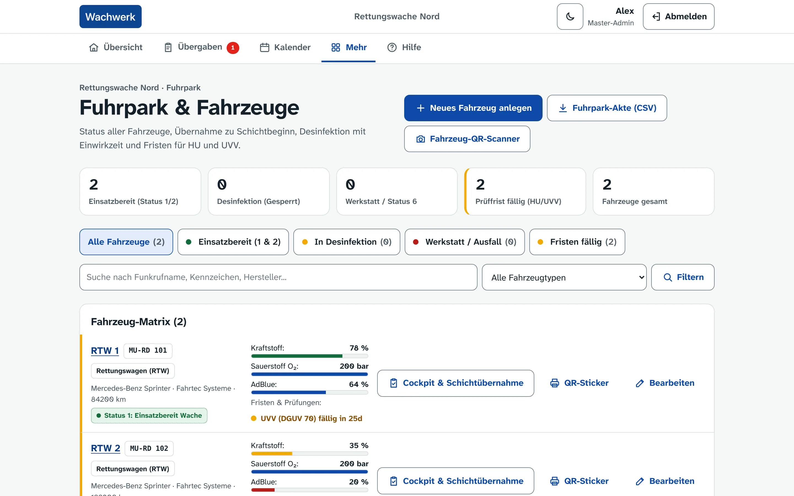

Wachbuch für Rettungswachen
Was die Schicht wissen muss. Auf einen Blick.
Die Übersicht zeigt zuerst, was Aufmerksamkeit braucht: dringende Übergaben, fällige Fristen, gesperrte Geräte, knappes Material. Alles Unauffällige steht in einer ruhigen Zeile.


Schichtübergabe
Übergaben statt Zettel und Zuruf.
Jede Übergabe trägt Priorität, Status und Verlauf. Die nächste Schicht sieht sofort, was dringend ist, und quittiert, was sie gelesen hat.

Fuhrpark und Medizingeräte
Fristen sehen, bevor sie ablaufen.
Einsatzbereitschaft, Füllstände und HU/UVV-Fristen je Fahrzeug. Medizingeräte mit STK- und MTK-Fristen; ein Gerät mit offenem Mangel bleibt gesperrt, bis die Schichtleitung es freigibt.
